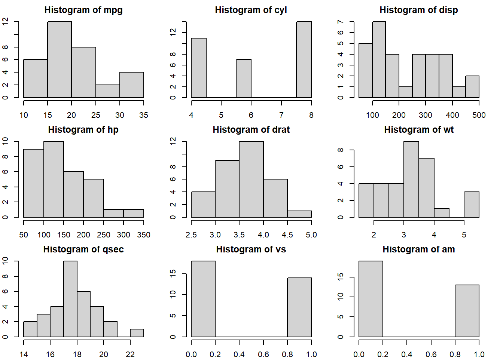
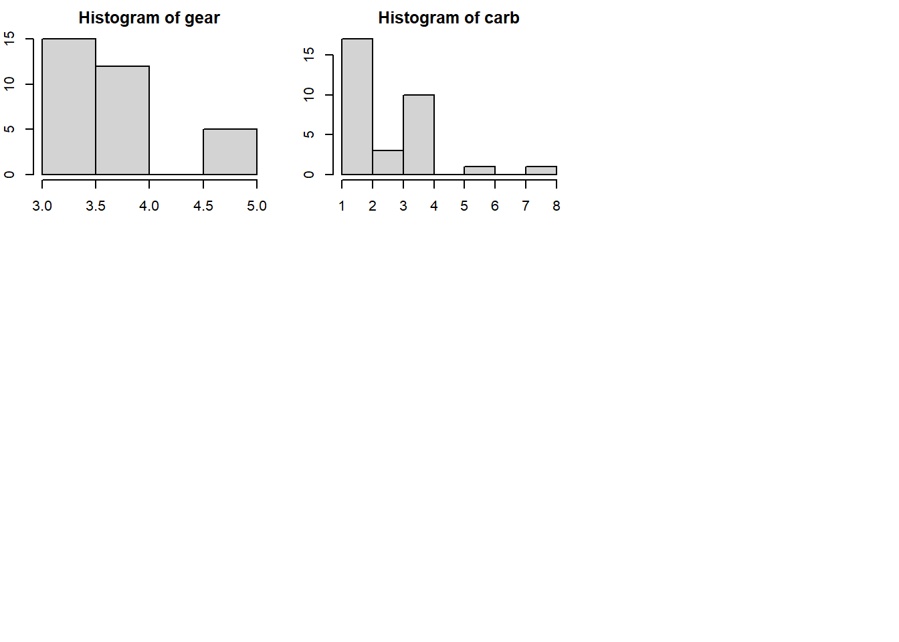

Chapter 3 Data
When you have data, don’t feel so rushed to jump into data analysis yet. Some steps can help you know your data better and, more than often, avoid problems down the road. Here we demonstrate typical steps for exploring data.
3.1 Data Exploratoary Analysis
After you read in data, do some checks. Below we use the embedded mtcars as an example for illustration.
## 'data.frame': 32 obs. of 11 variables:
## $ mpg : num 21 21 22.8 21.4 18.7 18.1 14.3 24.4 22.8 19.2 ...
## $ cyl : num 6 6 4 6 8 6 8 4 4 6 ...
## $ disp: num 160 160 108 258 360 ...
## $ hp : num 110 110 93 110 175 105 245 62 95 123 ...
## $ drat: num 3.9 3.9 3.85 3.08 3.15 2.76 3.21 3.69 3.92 3.92 ...
## $ wt : num 2.62 2.88 2.32 3.21 3.44 ...
## $ qsec: num 16.5 17 18.6 19.4 17 ...
## $ vs : num 0 0 1 1 0 1 0 1 1 1 ...
## $ am : num 1 1 1 0 0 0 0 0 0 0 ...
## $ gear: num 4 4 4 3 3 3 3 4 4 4 ...
## $ carb: num 4 4 1 1 2 1 4 2 2 4 ...As seen above, the command str allows you to see the variables and their types. For this dataset, all variables are numerical. If some are categorical but they should be numerical, make sure you transform them into the right type of data. (Sometimes numbers are saved as characters, and the analysis would not be correct if the datatype remains as character.)
Next, try to make some plots–typically histograms for numerical variables and barplots for categorical variables.
par(mfrow = c(3,3), mar = c(2,2,2,2))
for (i in 1:ncol(mtcars)){
hist(mtcars[,i], main = paste0("Histogram of ", colnames(mtcars)[i]))
}
You can also look at the paired plots to see if two variables are too perfectly correlated, which could cause problems in regression models.

Next, take a look at the summary statistics.
for (i in 1:ncol(mtcars)){
print(paste0("***** Summaries of ", colnames(mtcars)[i]," *****"))
print(summary(mtcars[,i]))
}## [1] "***** Summaries of mpg *****"
## Min. 1st Qu. Median Mean 3rd Qu. Max.
## 10.40 15.43 19.20 20.09 22.80 33.90
## [1] "***** Summaries of cyl *****"
## Min. 1st Qu. Median Mean 3rd Qu. Max.
## 4.000 4.000 6.000 6.188 8.000 8.000
## [1] "***** Summaries of disp *****"
## Min. 1st Qu. Median Mean 3rd Qu. Max.
## 71.1 120.8 196.3 230.7 326.0 472.0
## [1] "***** Summaries of hp *****"
## Min. 1st Qu. Median Mean 3rd Qu. Max.
## 52.0 96.5 123.0 146.7 180.0 335.0
## [1] "***** Summaries of drat *****"
## Min. 1st Qu. Median Mean 3rd Qu. Max.
## 2.760 3.080 3.695 3.597 3.920 4.930
## [1] "***** Summaries of wt *****"
## Min. 1st Qu. Median Mean 3rd Qu. Max.
## 1.513 2.581 3.325 3.217 3.610 5.424
## [1] "***** Summaries of qsec *****"
## Min. 1st Qu. Median Mean 3rd Qu. Max.
## 14.50 16.89 17.71 17.85 18.90 22.90
## [1] "***** Summaries of vs *****"
## Min. 1st Qu. Median Mean 3rd Qu. Max.
## 0.0000 0.0000 0.0000 0.4375 1.0000 1.0000
## [1] "***** Summaries of am *****"
## Min. 1st Qu. Median Mean 3rd Qu. Max.
## 0.0000 0.0000 0.0000 0.4062 1.0000 1.0000
## [1] "***** Summaries of gear *****"
## Min. 1st Qu. Median Mean 3rd Qu. Max.
## 3.000 3.000 4.000 3.688 4.000 5.000
## [1] "***** Summaries of carb *****"
## Min. 1st Qu. Median Mean 3rd Qu. Max.
## 1.000 2.000 2.000 2.812 4.000 8.000The summaries can show, for example, ranges and means of the variables. They can give you a better understanding of where the values are and whether there might be data entry errors.
3.2 Data Requirement
It is difficult to talk about data requirement in a general sense. A few considerations are offered here. The data should be appropriate to the research questions. For example, if you want to know causal relationships, clinical trial data is the gold standard. Further, make sure that the sample size is large enough for what you want to study. If you would like to know the behavior of mice, repeatedly recording the behavior of one mouse, or even five mice, will not be sufficient. Further, measurement should be consistent. Any major changes in the data collection methods should be taken into consideration. Sometimes adjustment can be made. The best practice is to consider how the data is collected and ensure that there is sufficient information in the data to answer the research questions.
3.3 Strategies for Missing Data
3.3.1 Removing observations
If you have a large dataset and the percentage of missing data is small, you can simply ignore those observations. Note that you should check whether the pattern of missingness is “missing at random,” meaning that the reason why certain observations are missing is pure chance. If, for example, some observations are missing because the pollution level is too high or too low and the detection is not ideal, then ignoring these observations could result in biased conclusions.
3.3.2 Imputation
Imputation is a commonly used method for missing data. If linearity is plausible, you can use linear imputation. If some response variables are missing, some Bayesian method can fill in the values using posterior draws. (In other words, in the process of running the analysis, the algorithm can predict what the response variable should be according to the assumed model and fill it in.) Typically imputation is done multiple times and the mean imputated values are used.